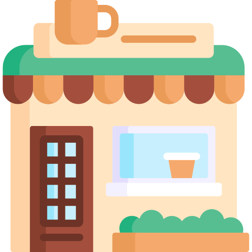

Coffee in
Australia:
From Daily Ritual
To Global Trade
From the first sip to the final bill, this visual story explores how coffee became part of Australia's everyday rhythm.




-
01Taste
-
02Benefits
-
03Trade
-
04Price
-
05Places
-
06Global
-
07The Premium End
-
08Closing
What do Australians actually drink?
Australia is often seen as a flat white country, but coffee habits change with age. Older drinkers usually stick with cappuccinos and espresso, while younger drinkers are more likely to choose iced or specialty coffee. The flavour profile sits somewhere between milky comfort and strong coffee taste.
Why does coffee feels like more than a drink to Australians?
Many people start drinking coffee because it helps them feel more awake, but the habit often becomes more than that. For Australians, coffee can be part of a morning routine, a quick social break, or a small reset during the day. Some benefits are supported by research, while others come from personal experience, but both affect how people value their cup of coffee.
Where does Australia's coffee come from?
Australia does not grow much coffee commercially, so most beans travel a long way before reaching local cafés. Many start from coffee-growing countries such as Brazil, Colombia, Ethiopia or Vietnam, then arrive through major Australian ports like Melbourne, Sydney, Brisbane and Fremantle.
How much does a cup cost?
A standard flat white ranges from $4.21 in Melbourne to $4.86 in Darwin. Less than a dollar separates the cheapest state from the priciest, but that gap compounds quickly when you're buying two cups a day, five days a week.
Where is café culture concentrated?
Australia’s café culture is not evenly spread. The largest and darkest bubbles cluster around major capital-city regions, especially Melbourne and Sydney, where high population density, office workers, universities and walkable inner suburbs support more cafés per square kilometre. Smaller but visible café hubs also appear around Perth, Adelaide, Brisbane, the Gold Coast and Hobart, showing that café culture follows Australia’s urban and coastal settlement pattern.
How does Australia compare globally?
Australia may not top the world in coffee consumed per person, with New Zealand and several Nordic or European countries drinking more by volume. But Australia’s coffee story is not about quantity alone. Its culture stands out through espresso-based drinks, dense café scenes and the social habit of meeting over coffee.
The premium end of coffee.
At the top of the market, a kilogram of coffee can cost more than a return flight to Bangkok. Rarity, process and provenance drive prices, not flavour alone. The world's most expensive beans are rarely what Australians actually order.
Australia's
coffee story.
Coffee in Australia is a global product served on a local rhythm. Therefore, the cup in your hand carries every section of this story inside it.